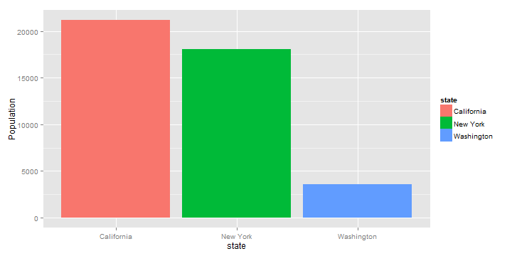
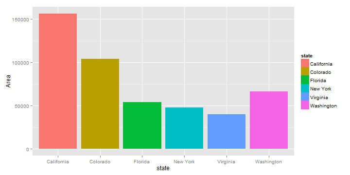

This Application allows the user to compare between different USA states based on :
- Population
- Income
- Illiteracy
- Life Expectancy
- Number of Murders
- Frost
- Area
For more information about the data http://www.inside-r.org/r-doc/datasets/state.x77
Khalid Ezzeldeen
Student
This Application allows the user to compare between different USA states based on :
For more information about the data http://www.inside-r.org/r-doc/datasets/state.x77
Steps used to upload and refine the data
library(datasets)
library(ggplot2)
library(shiny)
data(state)
statesData = as.data.frame(state.x77)
statesData$state = rownames(statesData)
statesData$state = as.factor(statesData$state)
statesData$LifeExp = statesData$"Life Exp"
head(statesData,1)
## Population Income Illiteracy Life Exp Murder HS Grad Frost Area
## Alabama 3615 3624 2.1 69.05 15.1 41.3 20 50708
## state LifeExp
## Alabama Alabama 69.05
Example 1 : Compare the population between New York, Washington, and California states
ggplot(data=statesData[statesData$state %in% c("New York","Washington","California"),],
aes(x=state, y=Population)) + geom_bar(aes(fill=state),stat="identity")

Example 1 : Compare the area between different states
ggplot(data=statesData[statesData$state %in% c("New York","Washington","California","Florida",
"Colorado","Virginia"),],aes(x=state, y=Area)) + geom_bar(aes(fill=state),stat="identity")
